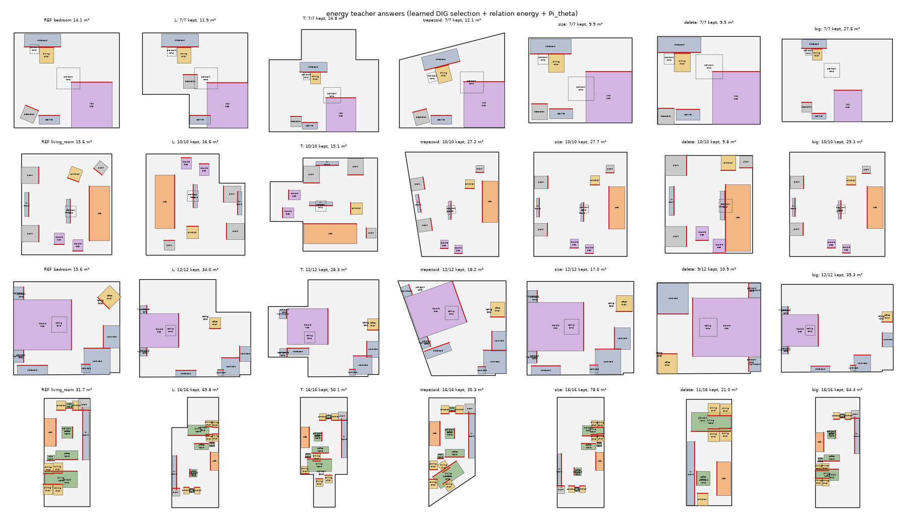
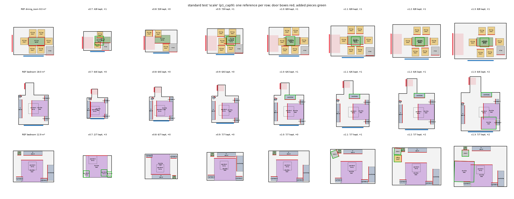
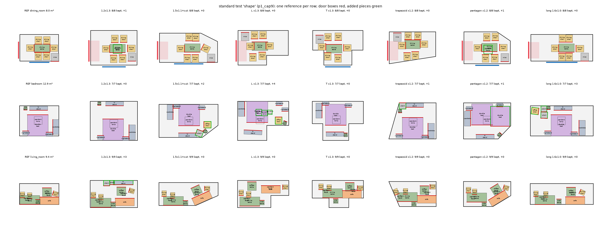
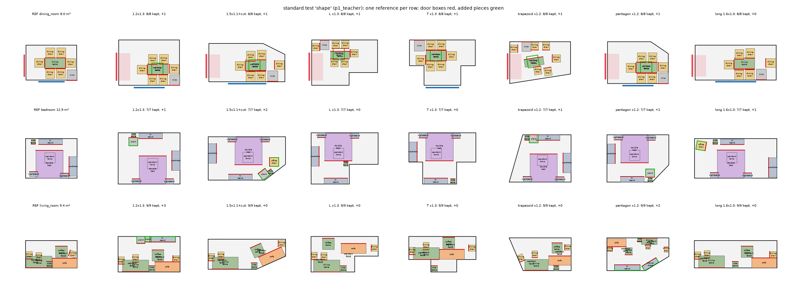
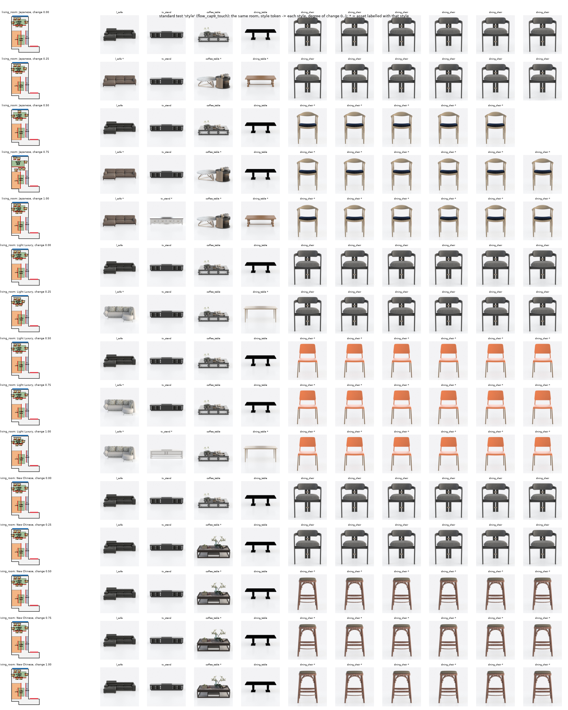

Working draft v0.3 — feasibility stage, not peer-reviewed v0.3
MethodExperimentsLimitationsReferencesAppendix
Abstract. A person who likes another home's arrangement wants it in their own home, directly: the same kind of furniture, arranged the same way, in a room of another size and outline with doors and windows elsewhere. If an energy that scores "the arrangement kept" can be written down and minimised, why train a model? We find two reasons. Minimising such an energy from the affine transplant under hard constraints tears furniture groups apart: on reshaped target rooms, our constrained relation-energy solvers leave 12.7%–16.7% of the reference's touching pairs more than 30 cm apart (without / with a wall-side rule), where our flow transformer leaves 7.7% (after the final projection, teacher 18.8%, student 10.3%). The difference on reshaped rooms is significant (−8.5 pts [−13.0, −2.9], p=0.005, 9 rooms); on scaled rooms it is not. And rules trade one quality for another: forcing the reference's wall sides on our own model raises its kept wall contacts on reshaped rooms from 0.61 to 0.84 and its torn pairs from 10.3% to 17.2%, the teacher's level. IntentFlow therefore learns placement with a flow transformer conditioned only on the reference, guided by a design-intent graph (DIG) over furniture, walls, doors and windows that is itself learned from pairs of real rooms furnished by two designers — its edge scores rank held-out cross-designer preservation with Spearman 0.421 (category-pair mean 0.355) and its keep head separates kept from dropped pieces with AUC 0.879, with no relation types or hierarchy written by hand. A relation-energy teacher supplies answers only for room shapes real pairs rarely cover, and a projection in an arrangement metric enforces non-penetration, containment and door clearance while moving neighbours together. The teacher keeps a lower relation distance \(D\) on scaled rooms (0.057 vs 0.068), which is close to its own objective, and more wall contacts on reshaped rooms; the student tears fewer groups. The same holds on held-out real pairs: the student tears 11.8% of touching pairs against the teacher's 20.1% (p=0.023) at a distance to the reference arrangement \(D_A\) that is not significantly different (0.081 vs 0.075). Adding the second designer's placements as training targets did not help: it moved placements away from the reference without approaching the designer, so real pairs currently contribute through what is kept and added. A style token re-selects furniture appearance without changing the arrangement.
Scene generators sample plausible layouts [3, 4, 5], rearrangement models tidy a given one [2], and physics-aware generators keep layouts interactable [1]. None of them takes a layout the user already likes and reproduces it in another room. The task we study is that transfer: given a reference scene \(S_\text{ref}\) (furniture with categories, sizes, poses and assets) and an empty target room \(P_t\) (outline, doors, windows), return a layout in \(P_t\) that keeps how \(S_\text{ref}\) is arranged — which side of a bed touches a wall, which chairs belong to which table, what faces the television — and is physically valid. When \(P_t\) is smaller, some pieces must go; when larger, a designer might add some. The appearance of the furniture may stay or move toward another style.
Why a model, if the energy can be minimised? One can write the arrangement as an energy — every reference relation kept, weighted by importance — and minimise it in the target room under the hard constraints (§4.6). We use exactly such an optimiser, and it fails in two ways. (a) Tearing. The energy is non-convex. From the affine transplant, a local constrained solver resolves wall and door conflicts piece by piece, and in reshaped rooms coherent groups are pulled toward different walls: on outline targets the solver with the wall-side rule leaves 16.7% of the reference's touching pairs more than 30 cm apart before any projection, the rule-free solver 12.7%, the flow transformer 7.7% (§6.3). (b) Priors that do not fit into closed-form terms. Every rule we added to the energy traded one quality for another: forcing each piece's reference wall side raises kept wall contacts and, with them, the torn pairs on outline targets — for the teacher's energy and for our own model alike (§6.3); a hand-set window-front rule in the projection pushed beds and TV stands off their walls and was switched off during development. Designers themselves change relations — two designers' arrangements of the same furniture are a median \(D=0.35\) apart — so what they do is not the minimiser of a geometric energy. A generative model can learn how arrangements adapt from examples instead of from weighted terms.
In IntentFlow the flow transformer is that model. The relation-energy optimiser becomes a teacher that supplies geometric augmentation for room shapes and sizes that real pairs rarely cover, and the projection \(\Pi_\theta\) only makes the flow's output feasible after the groups are placed. What the model learns from real designer pairs is so far the structural part — which pieces a designer keeps and what they add, through the design-intent graph and the addition model; training the placement itself toward the second designer (who never saw the reference) moved outputs away from the reference (\(D_A\) 0.085 → 0.118 with full real pairs as the main signal, 0.081 → 0.095 with real pairs mostly as addition items) without bringing them closer to the designer (\(D_B\) ≈ 0.338, §6.4). The teacher is better on the relation distance \(D\) and on wall contacts; \(D\) is nearly the teacher's own objective, so part of that advantage holds by construction.
Contributions, with the current evidence:
Layout synthesis and rearrangement. Optimisation-based systems encode interior-design guidelines as energies [7, 8]; PlanIT [9] plans a relation graph and instantiates it; learned generators are autoregressive [3], diffusion-based [4] or graph-conditioned [5]. They generate a new layout for a room and take no reference arrangement to preserve. LEGO-Net [2] learns to move a messy layout toward a regular one; PhyScene [1] guides a diffusion sampler with collision and reachability terms. Both are our planned baselines. Our relation energy is related to guideline energies, but its terms are one generic relation distance weighted by a learned graph, and it serves as a teacher, not as the deployed method.
Relation graphs. Scene-graph methods use a fixed vocabulary of relation types (support, facing, adjacency) [9, 5]. The DIG has no vocabulary: every node pair carries the same geometric descriptor, and the importance of a relation is regressed from how often a second designer keeps it. The graph transformer adds pairwise MLP biases to attention logits, as in Graphormer [10].
Flows and students. Flow matching [11] and rectified flow [12] regress a velocity along straight paths between two distributions; an informative source lets us start from the affine transplant. The student is a permutation-equivariant transformer [13] with adaptive layer-norm conditioning as in DiT [14, 15]. Training a fast model on the outputs of a slower, stronger procedure is knowledge distillation [16]; here the teacher is an optimiser with rules, used only where real data are missing.
Constraints and appearance. The projection and the teacher's energy solve are augmented-Lagrangian methods [17]. The appearance vector combines CLIP image features [18], 3D-FUTURE annotations [6] and room co-membership (a PPMI factorisation, cf. [19]), trained with an InfoNCE objective [20] and a supervised contrastive term [21].
Input. A reference scene \(S_\text{ref}=\{(c_i,s_i,p_i,\theta_i,a_i)\}_{i=1}^N\) with category \(c_i\), 3-D size \(s_i\in\mathbb R^3_{>0}\), floor position \(p_i\in\mathbb R^2\), yaw \(\theta_i\in(-\pi,\pi]\) and asset \(a_i\) (a 3D-FUTURE model); a target room \(P_t\), a simple polygon with door and window segments; optionally a style token \(z^\star\in\mathbb S^{31}\) and a degree of change \(\lambda\in[0,1]\).
Output. A layout \(\{(c_i,s_i',p_i',\theta_i',a_i')\}\) in \(P_t\). Pieces may be removed, replaced by a smaller or restyled asset of the same category, and new pieces may be added.
Requirements. (1) Arrangement (the core): the relations among the reference's pieces and between pieces and walls, doors and windows carry over — against a wall, facing, chairs around a table, nightstands flanking a bed. (2) Physics: every piece inside \(P_t\), no interpenetration beyond what real layouts show (a chair under a table), doorways clear. (3) Style: appearance follows \(z^\star\) by an amount set by \(\lambda\), with the arrangement unchanged.
Arrangement distance. For pieces \(u,v\), \(\phi_{uv}\in\mathbb R^6\) holds \(v\)'s offset in \(u\)'s frame (2), \(\cos\) and \(\sin\) of the relative yaw, the footprint gap and the centre distance. The per-relation distance
$$\begin{aligned}d(\phi,\phi')=\tfrac{1}{3.5}\Big[&\tfrac{1-\cos\angle(\phi_{1:2},\phi'_{1:2})}{2}+\tfrac{1-\cos(\Delta\theta-\Delta\theta')}{2}\\&+\min\!\Big(\tfrac{|\log(\phi'_6/\phi_6)|}{\log 3},1\Big)+\tfrac12\,\big[\,[\phi_5<0.05]\neq[\phi'_5<0.05]\,\big]\Big]\in[0,1]\end{aligned}\tag{1}$$combines offset direction, relative orientation, log distance ratio and contact (gap below 5 cm). Between two layouts of corresponding pieces,
$$D(S_\text{ref},S_\text{out})=\frac{1}{|\mathcal E|}\sum_{(i,j)\in\mathcal E}d\big(\phi^\text{ref}_{ij},\phi^\text{out}_{ij}\big),\tag{2}$$over all ordered pairs \(\mathcal E\) of pieces present in both. \(D\) scores placement of the kept pieces only; removals are scored separately.
The deployed path is a model (the student flow transformer) inside a thin discrete search, followed by a projection (Fig. 1). Learning is used where data can supervise: the design-intent graph \(g_\eta\) (real pairs), the student \(v_\vartheta\) (real pairs plus teacher answers), the addition model \(p_\psi\) (what designers added in partner rooms) and the appearance vectors \(z_k\) (annotations, images, co-membership). Hard constraints stay in the projection \(\Pi_\theta\). The relation energy \(E\) is not part of inference; it defines the teacher that produces augmentation answers, and its relation distance is also an evaluation yardstick.
| between | examples | descriptor |
|---|---|---|
| piece ↔ piece | chairs around a table, nightstands flanking a bed, sofa facing a TV, coffee table in front | \(\phi_{ij}\): offset of \(j\) in \(i\)'s frame, relative yaw, gap, distance |
| piece ↔ wall | against a wall, and which side (a bed's head, a sofa's back) | \(\phi\) to the nearest point of the nearest wall segment; the side = the wall's inward normal in the piece's frame |
| piece ↔ door | near a door, facing it; never blocking it | \(\phi\) to the nearest door; blocking is a hard constraint of \(\Pi_\theta\) |
| piece ↔ window | near a window, facing it | \(\phi\) to the nearest window |
Table 1. Relations IntentFlow keeps. All four use the same descriptor \(\phi\) and the same distance \(d\); walls, doors and windows are nodes whose frame is their segment midpoint and inward normal. Their importance is learned (§4.3); no relation type or distance threshold enters the method. The evaluation metrics of §6.1 use fixed thresholds to report kept wall, door and window relations, for comparability only.
Requirement. The graph must be learned by a model from data: no rule-based relation types ("near a window", "in a group", "main piece"), no thresholds, and no hierarchy defined by the system. Hierarchy has to emerge from learned quantities.
Graph. Nodes \(\mathcal V\) are all furniture pieces, wall segments, doors and windows of a room, each an oriented box (walls and openings: their segment, 2 cm deep, facing into the room). Every ordered pair \((u,v)\) carries the same descriptor \(\phi_{uv}\) of §3. A graph transformer \(g_\eta\) (4 layers, width 128, 4 heads) embeds each node from its category, kind, log size, elevation and pose in the room frame, and adds an MLP of \(\phi_{uv}\) to every attention logit. Two heads read the final embeddings \(e\):
$$\hat w_{uv}=\operatorname{sigmoid}\big(\mathrm{MLP}_w[e_u,e_v,\phi_{uv}]\big)\in[0,1],\qquad \kappa_i(\rho)=\operatorname{sigmoid}\big(\mathrm{MLP}_\kappa[e_i,\log\rho]\big)\in[0,1],\tag{3}$$with \(\rho=|P_B|/|P_A|\) the area ratio of the room a piece is carried into.
Supervision from real pairs only. A real pair is a room \(A\) and a partner room \(B\) of the same type from another house whose category-family sets have Jaccard similarity above 0.6 and whose area ratio lies in [0.5, 2]. Pieces are matched within category families by footprint size (identical pieces by a small position term) [22]. For matched pieces \(i\leftrightarrow k\), \(j\leftrightarrow l\) the edge target is the preservation
$$y_{ij}=1-d\big(\phi^A_{ij},\phi^B_{kl}\big),\tag{4}$$and for a piece and a wall, door or window, the nearest node of that kind in each room stands in (walls and openings do not correspond across rooms). A floor piece of \(A\) is kept (\(y^\text{keep}_i=1\)) if it is matched in \(B\) and dropped (\(y^\text{keep}_i=0\)) if unmatched while \(B\) contains its family; if \(B\) lacks the family entirely the piece is unlabelled, because that says more about the house than about space. The loss is
$$\mathcal L_\text{DIG}=\frac{1}{|\mathcal Y|}\sum_{(u,v)\in\mathcal Y}\big(\hat w_{uv}-y_{uv}\big)^2+\mathrm{BCE}\big(\kappa_i(\rho),y^\text{keep}_i\big).\tag{5}$$No annotation and no rule enters \(y\) or \(y^\text{keep}\); \(g_\eta\) learns which relations are intent (kept by another designer in another room) and which are incidental.
Augmentation by views. A real pair can be seen from a scaled or reshaped version \(A'\) of its reference room (the same pieces, moved by the augmentation) while the targets remain designer \(B\)'s, measured against \(A'\). The encoder then sees rooms of many shapes and sizes under designer supervision. Using the augmented pairs' own relations as targets instead teaches the augmentation's rules; §6.2 measures both.
Structure emerges from the graph (used in §4.4 and §4.7):
The graph weights the energy (§4.6), the search's relation mass (§4.4), the student's attention prior and inputs (§4.5) and the orientation set of \(\Pi_\theta\) (§4.7).
Remaining hand-written rules and where they still live. The deployed path uses none of the rules below; they remain for data generation, evaluation or ablation (Table 2).
| rule | where | role now |
|---|---|---|
| relation types and thresholds (wall contact within 15 cm, near a window 1.2 m, near a door 1.5 m, window strip 0.6 m, facing cos > 0.7) | rr/functional.py | evaluation metrics (kept wall / door / window relations); energy of the ablation path only |
| category lookup tables (category-pair keep rates, functional importance) | outputs/w_catmean.json, functional_importance.json | baselines of §6.2; importance filter of the functional metrics (> 0.2) |
| anchor list, seat-at-table string matching | rr/pipeline.py, rr/structure.py | only when the graph source is not the learned DIG (ablation) |
| grouping rules of the room augmentation (links, seats, lamps follow hosts) | rr/augment.py | produce the synthetic target rooms and the geometry of DIG views; their layouts are never answers |
| category families (e.g. all bed types → bed) | rr/pairs.py | correspondence of pieces in real pairs, hence part of the supervision of \(g_\eta\) |
| teacher's wall-side rule | rr/structure.py (teacher mode) | teacher only (§4.6); the student runs without it |
Table 2. Hand-written rules that remain in the code base, and their role. The family table is the one rule that shapes the DIG supervision; it defines which pieces correspond, not which relations matter.
When \(P_t\) cannot hold the reference, cannot be filled by it, or leaves the transplant's orientation ambiguous, four discrete variables are chosen: the kept set \(K\subseteq\{1,\dots,N\}\); a size level \(\sigma_i\) per piece (own asset or a smaller one of the same category); the quarter turn \(q\) of the transplant; and the additions \(A\). A candidate \((K,\sigma,q,A)\) is evaluated by placing it with the student and projecting, \(\hat S=\Pi_\theta(v_\vartheta(K,\sigma,q,A))\), and candidates are compared lexicographically (no weights):
The search is a greedy ascent on this key with \(\Pi_\theta\) as the feasibility oracle (Table 3).
| step | move | term of the key |
|---|---|---|
| 1 | footprint bound: \(\sum_{i\in K}\mathrm{fp}_i\le\max\big(\mathrm{fp}_\text{ref}\min(1,\rho+0.14),\ q_{95}(\text{density})\,|P_t|\big)\); pieces that cannot fit at all (half short side above the inscribed radius) go first | necessary condition for 1 (pruning) |
| 2 | within the bound: drop the floor piece with least \(\kappa_i\sum_j(\hat w_{ij}+\hat w_{ji})\), recomputed after each removal | 4 (keep relation mass) |
| 3 | still infeasible or unusable after projection: up to 3 extra drops, only among pieces with \(\kappa_i<\tfrac12\); door clearance itself is a constraint of \(\Pi_\theta\) | 1–2 with the real oracle |
| 4 | still infeasible: smaller assets for the whole selection, the mildest feasible shrink of 0.9, 0.8, 0.7, 0.6, 0.5, 0.4 and the area/axis factor \(\min(\sqrt\rho,H^t_a/H^\text{ref}_a,1)\); smaller assets buy fitting, never usability | 3 (departure for feasibility) |
| 5 | still unusable: the other quarter turns whose metric outline IoU is within 0.05 of the best (a scaled rectangle never turns) | 3 |
| 6 | any target room (no area gate): add the pieces \(p_\psi\) proposes until it predicts stop (at most 6), each accepted while the layout stays feasible (\(V\le\max(\varepsilon,V_\text{prev})\)) and usable (walkable share at least \(R_\text{walk}^\text{ref}-0.05\)) | additions \(A\) |
Table 3. Steps of the structure search. In the common case only step 1–2 run and one candidate is placed; the worst case evaluates 15 candidates, each one flow sample and one projection.
Additions. \(p_\psi(c,n\mid\text{layout},P_t,\zeta_\text{ref})\) is a transformer (3 layers, width 128) that predicts the next category \(c\) (or stop) and a count \(n\in\{1,\dots,3\}\), trained on partner rooms whose unmatched pieces are restored in random order, and conditioned on the reference code of the encoder it was trained with. The decision is stop versus continue: stop if \(p_\psi(\text{stop})>\tfrac12\), i.e. against the total mass of all categories; otherwise the most likely category is added. An added piece starts where designers put its category relative to its most frequent partner category present (an offset drawn from corpus statistics, the least colliding of 24 draws); the student then places it with the existing pieces fixed, and \(\Pi_\theta\) projects the whole layout.
State and flow. A piece's state is \(x_i=(p_i/L,\cos\theta_i,\sin\theta_i)\): its position in the frame of \(P_t\)'s minimum rotated rectangle, in units of \(L=3\) m, and its yaw. The flow starts at the affine transplant \(x_0=\mathcal T_q(S_\text{ref},P_t)\): each reference pose carried proportionally into the target frame under quarter turn \(q\) (the outline-IoU best turn at inference). Positions move on straight paths and yaws along the shorter arc [12, 11]:
$$\begin{gathered}x_\tau=\big((1-\tau)p_0+\tau p_1,\ \theta_0+\tau\,\Delta\theta\big),\\ \mathcal L_\text{FM}=\mathbb E_{\tau}\sum_{i}m_i\Big(\big\lVert v^p_{\vartheta,i}-(p_{1,i}-p_{0,i})\big\rVert^2+R_i^2\big\lVert v^\theta_{\vartheta,i}-\Delta\theta_i\,\mathbf e_\perp(\theta_{\tau,i})\big\rVert^2\Big),\end{gathered}\tag{6}$$in metres: \(R_i\) is the piece's half diagonal, so the yaw error counts as corner displacement (the metric of \(\Pi_\theta\)); \(\mathbf e_\perp(\theta)=(-\sin\theta,\cos\theta)\) is the unit tangent of the yaw circle; \(m_i\) masks supervised free pieces; \(\tau\sim\mathcal U(0,1)\). Auxiliary terms: binary cross-entropy of a wall-contact head and a wall-parallel head (targets: contact within 5 cm, yaw within 4° of the frame axes), and a relative loss (weight 1) on the position errors of neighbouring pieces (footprints within 0.3 m) so that a table and its chairs move together. Sampling integrates 50 Euler steps.
Conditions come from the reference only. The answer never enters an input. Each target piece with a reference counterpart receives: (i) the reference edge of every pair (offset, relative yaw, gap) and the current offset minus it, as attention biases; (ii) votes, where each other piece's reference relation puts it given that piece's current pose, averaged with weights decaying in reference distance; (iii) the functional relations \(\nu_i\): for its reference piece's nearest wall, door and window, the offset to the node's nearest point, relative yaw, gap, the DIG weight \(\hat w\) of that edge and a presence flag, plus the offset to the nearest node of that kind in \(P_t\) now minus the reference offset (what is left to undo); (iv) the DIG prior \(\mathrm{MLP}(\hat w_{ij},\text{known})\) as an attention bias; (v) a per-piece reference role code and a pooled reference code \(\zeta_\text{ref}\) from a 4-block encoder that sees categories, sizes and room-free pair relations, entering through adaptive layer norm [15] (replaced by a learned null with probability 0.15). Wall segments and openings (with their clearance boxes) are tokens of the same attention. New input modules are zero-initialised and loaded into earlier checkpoints.
Training items. Each item is one kind: real (a real pair: the matched pieces carried from \(A\) into \(B\)'s room and placed as \(B\)'s designer did), shape (L, T, trapezoid, pentagon outlines at another size), size, delete (a strong shrink whose answer removes pieces), big (enlargements of 1.3–1.7×), and self (the room itself). Any kind may come as an infill item (probability 0.2): a random part is fixed and the rest placed from relational starts, which teaches the placement of additions. All targets pass a door gate (no door box covered).
Inference cost. One structure selection, one flow sample and one projection in the common case; the teacher's energy solves and rules are not run.
Role. The teacher is geometric augmentation, not the method: it produces answers for the synthetic kinds, whose room shapes and sizes real pairs rarely cover, and it may use rules and many solver iterations because it runs offline. It inherits the two failure modes of §1 — its local solve tears groups in reshaped rooms, and its rules conflict — which the student is meant not to copy wholesale (§6.3).
For the synthetic kinds, the answer is produced by the full inference path with the student replaced by an energy placer. For kept pieces with poses \((p,\theta)\) in \(P_t\):
$$E(p,\theta)=\sum_{i\in K}\Bigg[\frac{\sum_{j}\tilde w_{ij}\,\tilde d\big(\phi^\text{ref}_{ij},\phi_{ij}\big)}{\sum_{j}\tilde w_{ij}}+(1-\delta_i)\sum_{\omega\in\{\text{wall},\text{door},\text{window}\}}\hat w_{i\,n_\omega(i)}\ \tilde d\big(\phi^\text{ref}_{i\,n_\omega(i)},\phi_{i\,n_\omega(i)}\big)\Bigg],\tag{7}$$minimised subject to the constraints of \(\Pi_\theta\) (§4.7) from the transplant by an augmented Lagrangian [17] (Adam, learning rate 0.02, 20 inner steps per outer iteration, at most 60 outer iterations). The terms:
An answer is kept only if its residual violation is at most 1 cm. The rule layouts of the room augmentation supply only the target rooms. Fig. 4 shows answers.

\(\Pi_\theta\) returns the feasible layout closest to the placed poses \((\hat p,\hat\theta)\):
$$\begin{aligned}&\min_{p,\theta}\ \sum_i\lVert p_i-\hat p_i\rVert^2+\big(R_i(\theta_i-\hat\theta_i)\big)^2+0.5\sum_{i\neq j}\bar w_{ij}\big\lVert(p_i-p_j)-(\hat p_i-\hat p_j)\big\rVert^2\\\text{s.t.}\ &\mathrm{pen}(i,j)\le\alpha_{ij}\ \ (i,j\ \text{overlapping in height}),\qquad \text{corners}(p_i,\theta_i)\subset P_t,\\&\mathrm{pen}(i,b)\le0\ \ (b\in\mathcal D,\ i\ \text{below the door top}),\qquad \theta_i\in\Theta_i\ \ (i\ \text{locked}),\qquad \mathrm{gap}(i,\ell_i)\le0.03\,\text{m}\ \ (i\in\mathcal C)\end{aligned}\tag{8}$$Why the constraints are not learned. Two placements of a penalty conflict with flow matching. On the endpoint estimate \(\hat x_1=x_\tau+(1-\tau)v_\vartheta\), which for the exact field is the posterior mean \(\mathbb E[x_1\mid x_\tau]\), a non-convex feasible set (a chair left or right of a doorway) can make the constraint infeasible even for the exact field, since the mean of two feasible answers can lie in the doorway. On the sampler output, the answers lie on the constraint boundary (pieces touch walls and each other), so any position error \(e\) with scale \(s>0\) yields an expected violation that grows with \(s\). The projection enforces the constraints per sample instead; the corresponding ablation is pending (§7).
Style means the furniture's appearance (colour, shape, material). Each asset \(k\) of the catalogue gets \(z_k=f(\text{co}_k,\text{clip}_k,\text{label}_k)\in\mathbb S^{31}\), an MLP (hidden width 256) of its room co-membership embedding (PPMI factorised by SVD), its CLIP image features [18] and one-hot 3D-FUTURE style, theme and material labels. Training holds out one piece of a room, whose designer's asset is \(k^\ast\), and ranks \(k^\ast\) against same-category assets by the mean \(\bar z\) of the room's other pieces, plus a supervised contrastive term on the style label:
$$\mathcal L_z=-\log\frac{\exp(\langle z_{k^\ast},\bar z_{\text{room}\setminus k^\ast}\rangle/\gamma)}{\sum_{k\in\mathrm{cat}(k^\ast)}\exp(\langle z_k,\bar z_{\text{room}\setminus k^\ast}\rangle/\gamma)}+\mu\,\mathcal L_\text{SupCon}(z;\text{style label}),\tag{9}$$with \(\gamma=0.1\), 63 sampled negatives per query and \(\mu>0\) [20, 21].
Swapping. The token \(z^\star\) is the mean \(z\) of a style label (or of another room). Pieces are grouped into units of identical assets (four equal chairs change together). A unit's candidate is the same-category asset closest to \(z^\star\) within a size tolerance \(\beta\), tried as 12%, 20%, 30% per dimension (\(\Pi_\theta\) absorbs the rest); with a style label only assets carrying it qualify, without one the candidate must be closer than the own asset by 0.05. Units without a candidate keep their asset. Units are sorted by their gain toward \(z^\star\) and taken while that brings the number of swapped pieces closer to \(\lambda N\):
$$\max_U\sum_{u\in U}\mathrm{gain}_u\quad\text{s.t.}\quad\Big|\sum_{u\in U}|u|-\lambda N\Big|\ \text{minimal}.\tag{10}$$The swap happens inside the structure search, before placement, so the arrangement passes through the student and \(\Pi_\theta\) unchanged.
Corpus. 3D-FRONT [23] rooms with 5–24 pieces after duplicate removal (13,729 rooms), split by house with seed 0 into 10,988 training, 1,402 validation and 1,339 test rooms (10% / 10% of houses). The test split has not been used. All evaluations below use validation rooms, which no model was trained on; they were, however, used to guide development, so the final numbers will come from the test split.
| source | rooms | pairs / answers | used by |
|---|---|---|---|
| real pairs, full (all partner pairs, with additions and drops) | 2,636 | 6,828 | student cap10 (main signal) |
| real pairs filtered to \(D\le0.15\) (matched pieces only) | 1,899 | 3,350 | student cap9 / cap9n (real kind) |
| teacher answers, energy placer without the wall-side rule | 463 | 3,052 (L 463, pentagon 461, T 463, trapezoid 463, size 462, delete 277, big 463) | student cap9 / cap9n (synthetic kinds) |
| teacher answers with the wall-side rule | 463 | 3,048 so far (3,052 of 3,052 jobs done) | student cap10 |
| DIG real training pairs (deployed \(g_\eta\)) | — | 10,000 | \(g_\eta\) |
| DIG augmented views | — | 10,000 | \(g_\eta\) |
| DIG validation pairs (validation split) | — | 2,575 | §6.2 |
Table 4. Training data. A room's partners are up to 4 rooms of the same type from other houses (§4.3). The full real pairs keep 7% of pairs at \(D\le0.15\) and 19% at \(D\le0.25\); their median \(D\) between the two designers is 0.35. 87% of full pairs contain pieces designer B added (2.82 per pair on average, 7.18 matched pieces). Rooms whose pieces extend more than 20% of their footprint outside the room are excluded.
Real designers change relations: the median distance between two designers' arrangements of matched pieces is 0.35, and filtering at \(D\le0.15\) discards 93% of the pairs together with every added piece. The cap9 student was trained on that filtered subset; the full pairs are the main signal of cap10, as two item kinds: the matched pieces carried from \(A\) into \(B\), and the added pieces placed around \(B\)'s matched pieces.
Standard tests (std_test.py). Fixed validation rooms with 6–12 pieces including a bed, a sofa with a TV or a dining set, and no
piece more than 10% outside; 10 rooms per test. Scale: the room scaled by 0.7, 0.8, 0.9, 1.0, 1.1, 1.2, 1.3. Outline: targets no smaller than the reference —
1.2x1.3; 1.5x1.1+cut; L x1.3; T x1.3; trapezoid x1.2; pentagon x1.2; long 1.6x1.0 (a shape change, not a squeeze; nearly rectangular references). Style: the room itself with the token of Japanese, Light Luxury, New Chinese at
\(\lambda\in\{0, 0.25, 0.5, 0.75, 1\}\). All tests run the full inference path on CPU, reachability rounds off, additions on for scale and outline.
Held-out real pairs (real_eval.py). 120 validation rooms \(A\), each with a partner \(B\) (same criteria as training); the system gets \(A\)
and \(B\)'s empty room and is compared with \(B\)'s designer. Real pairs supervise dropping, adding and how relations adapt; since the user asks for \(A\)'s arrangement,
\(D_A\) (\(D\) to \(A\) over kept pieces) is the primary arrangement metric and \(D_B\) (\(D\) to \(B\)'s poses) is a reference only: \(B\) never saw \(A\), and two designers'
arrangements are a median 0.35 apart.
Metrics. \(D\) (eq. 2) between reference and output over kept pieces. \(D\) uses the relation distance \(d\) of eq. 1, and the teacher minimises an energy built on its smooth version \(\tilde d\) (eq. 7); a lower \(D\) for the teacher is therefore partly by construction. Torn pairs (group cohesion): of the floor pairs that touch in the reference (footprint gap ≤ 5 cm) and are both kept, the share whose gap in the output exceeds 30 cm — a chair pulled off its table, a nightstand off its bed; measured on the final layout and on the placer's output before \(\Pi_\theta\) (for the student, the flow sample; for the teacher and the energy placer, their constrained energy solve). \(\Pi_\theta\) displacement: mean and maximum distance each piece moves in the projection. Wall / door / window kept: of the reference's wall-contact (same side), near/facing-door and near/facing/not-blocking-window relations whose category importance exceeds 0.2, the share the output keeps (hand thresholds of Table 2, used only here); undefined in rooms without such a relation. Kept: fraction of reference pieces in the output. Usable: share of targets meeting the usability tier of §4.4. Out of room: floor pieces more than 5% outside. Collision: floor pairs overlapping by more than 2% of the smaller footprint, nestable pairs excluded (real pairs: 10%). Door blocked: door boxes more than 5% covered. Keep F1: kept pieces of \(A\) against those \(B\)'s designer kept; add F1: multiset F1 of added against \(B\)'s added categories (1 when both add nothing). Keep and add F1 depend only on the DIG and \(p_\psi\), which all placers share. The weighted relation loss \(L_w\) of §4.4 is not reported: the standard-test script weights it with an earlier pair-weight network (pending until it uses \(g_\eta\)). Wall time: seconds per target measured inside a pool of 56 CPU processes (one thread each), so absolute values include contention.
Statistics. Differences between two methods on the standard tests are mean paired differences over the same targets, with 95% intervals and two-sided \(p\) from a bootstrap that resamples rooms (10,000 resamples), so all targets of a room move together; \(n\) is the number of rooms that contribute (rooms without touching pairs drop out of the torn-pair comparisons). Real-pair runs are paired by pair id when both files carry it and otherwise compared unpaired. We call a difference significant at \(p<0.05\); with 10 rooms per test, smaller differences remain undecided.
Models. Student cap9: st1d → st1f → st1g → st1i → st2s → cap7 → cap8 → cap9, the last run 6,000 steps, warm-started from the previous capability run. cap9n is the same run without the functional-relation input; cap10 continues from cap9 with full real pairs as the main placement target, cap11 with real pairs drawn mostly as addition items. Runs labelled Euclidean use \(\Pi_\theta\) without the neighbour term, runs labelled arrangement-metric use eq. 8. The deployed DIG is the view model of Table 5. A second student (p1_cap11) is shown where its runs exist.
| training data (pairs) | all edges | piece–piece | piece–wall | piece–door | piece–window | keep AUC | keep AUC, \(\rho<0.9\) |
|---|---|---|---|---|---|---|---|
| all real pairs (40,063) | 0.432 0.356 | 0.438 0.370 | 0.444 0.305 | 0.139 0.087 | 0.295 0.200 | 0.902 | 0.889 |
| real subset (10,000) | 0.412 0.355 | 0.419 0.369 | 0.421 0.304 | 0.104 0.079 | 0.270 0.197 | 0.851 | 0.844 |
| subset + augmented pairs as designer targets (10,000 + 10,000) | 0.283 0.355 | 0.293 0.369 | 0.309 0.304 | 0.083 0.079 | 0.202 0.197 | 0.882 | 0.873 |
| subset + augmented pairs, auxiliary head (10,000 + 10,000) | 0.413 0.355 | 0.420 0.369 | 0.417 0.304 | 0.110 0.079 | 0.239 0.197 | 0.877 | 0.867 |
| subset + augmented views (designer targets) (10,000 + 10,000) | 0.421 0.355 | 0.427 0.369 | 0.440 0.304 | 0.129 0.079 | 0.263 0.197 | 0.879 | 0.869 |
| subset + ½ views + ½ auxiliary pairs (10,000 + 10,000) | 0.410 0.355 | 0.415 0.369 | 0.428 0.304 | 0.124 0.079 | 0.248 0.197 | 0.875 | 0.867 |
Table 5. Held-out real pairs (2,575 pairs from validation rooms). Cells: Spearman correlation of the prediction \(\hat w_{uv}\) with the measured preservation \(y_{uv}\) (bold) and, below it, the same for the category-pair mean of \(y\) on that run's real training pairs. Keep AUC: node head \(\kappa\) against the designer's keep label (17,780 labels, base rate 0.85; 6,845 in smaller rooms). All runs: 6,000 steps, batch 32. Highlighted: the deployed checkpoint. A constant prediction has no rank correlation; the edge-kind mean reaches 0.042 on all edges.
The learned scores rank preservation above the category-pair baseline on all edges (0.421 vs 0.355), piece–piece (0.427 vs 0.369), piece–wall (0.440 vs 0.304), piece–door (0.129 vs 0.079) and piece–window (0.263 vs 0.197) edges, so part of what another designer keeps depends on the room and the pieces' geometry, not only on the category pair. The absolute correlations are moderate, and door edges are weakest. The node head separates kept from dropped pieces with AUC 0.879 (0.869 in smaller rooms).
Training data. With the real-pair subset fixed, rule targets on the designer head change Spearman by -0.129: the augmented pairs' relations follow the augmentation's rules, not designers. On an auxiliary head they change it by +0.001; as views with designer targets by +0.010 (keep AUC +0.029); half views and half auxiliary pairs by -0.002. More real pairs help more: all real pairs change Spearman by +0.020 over the subset, which is +0.010 relative to the view model (keep AUC +0.022). The highest correlation in Table 5 is obtained with "all real pairs"; the deployed checkpoint is the view model, and a view model on all real pairs is the next run.
| validation edges | n | std of target \(y\) | std of prediction \(\hat w\) |
|---|---|---|---|
| all | 154,792 | 0.219 | 0.104 |
| piece | 129,896 | 0.218 | 0.104 |
| wall | 17,780 | 0.222 | 0.108 |
| door | 4,455 | 0.200 | 0.039 |
| window | 2,661 | 0.254 | 0.091 |
Table 6. Spread of targets and predictions on the validation edges (deployed model). The predictions are compressed relative to the targets; the ranking, not the scale, is what the search and the energy use.
| method | \(D\) ↓ (teacher's objective) | torn pairs before \(\Pi_\theta\) ↓ | torn pairs after \(\Pi_\theta\) ↓ | wall kept ↑ | \(\Pi_\theta\) displacement, mean | largest move per target (mean) | out of room or collision (max) | wall time / target (pool) |
|---|---|---|---|---|---|---|---|---|
| teacher (arrangement-metric \(\Pi_\theta\)) | 0.057 | 7.3% | 7.7% | 0.87 | 4 cm | 18 cm | 0.0% | 39 s |
| energy placer (arrangement-metric \(\Pi_\theta\)) | 0.065 | 9.3% | 10.1% | 0.74 | 6 cm | 20 cm | 0.0% | 38 s |
| student cap9 (arrangement-metric \(\Pi_\theta\)) | 0.068 | 3.6% | 5.0% | 0.77 | 11 cm | 32 cm | 0.0% | 31 s |
| student cap11 (arrangement-metric \(\Pi_\theta\)) | 0.074 | 4.8% | 9.3% | 0.78 | 13 cm | 41 cm | 0.0% | 32 s |
| student cap9 (Euclidean \(\Pi_\theta\)) | 0.071 | 3.7% | 5.8% | 0.79 | 10 cm | 33 cm | 1.7% | 29 s |
| student cap10 (Euclidean \(\Pi_\theta\)) | 0.077 | 1.2% | 6.1% | 0.79 | 11 cm | 33 cm | 3.3% | 31 s |
Table 7. Scale test (10 validation rooms per column, one seed; means over the columns). Torn pairs: reference-touching pairs more than 30 cm apart, before and after \(\Pi_\theta\). \(D\) is close to the teacher's objective. Wall time per target inside a 56-process CPU pool.
| method | \(D\) ↓ (teacher's objective) | torn pairs before \(\Pi_\theta\) ↓ | torn pairs after \(\Pi_\theta\) ↓ | wall kept ↑ | \(\Pi_\theta\) displacement, mean | largest move per target (mean) | out of room or collision (max) | wall time / target (pool) |
|---|---|---|---|---|---|---|---|---|
| teacher (arrangement-metric \(\Pi_\theta\)) | 0.054 | 16.7% | 18.8% | 0.88 | 3 cm | 17 cm | 0.0% | 26 s |
| energy placer (arrangement-metric \(\Pi_\theta\)) | 0.053 | 12.7% | 16.1% | 0.70 | 3 cm | 15 cm | 0.0% | 20 s |
| student cap9 (arrangement-metric \(\Pi_\theta\)) | 0.060 | 7.7% | 10.3% | 0.61 | 10 cm | 33 cm | 0.0% | 21 s |
| student cap11 (arrangement-metric \(\Pi_\theta\)) | 0.065 | 11.4% | 15.3% | 0.69 | 10 cm | 39 cm | 1.0% | 25 s |
| student cap9 (Euclidean \(\Pi_\theta\)) | 0.060 | 7.7% | 12.7% | 0.62 | 8 cm | 33 cm | 0.0% | 20 s |
| student cap10 (Euclidean \(\Pi_\theta\)) | 0.074 | 9.8% | 17.7% | 0.75 | 11 cm | 38 cm | 0.0% | 25 s |
Table 8. Outline test, same columns as Table 7.
Tearing (failure mode a). Before any projection, the teacher's constrained solve leaves 7.3% (scale) and 16.7% (outline) of the reference's touching pairs torn; the student's flow sample leaves 3.6% and 7.7%. The outline difference is significant (−9.0 pts [−16.9, −2.4], p=0.005, 9 rooms), the scale difference not significant with 10 rooms. After \(\Pi_\theta\), the student has 5.0% and 10.3%, the teacher 7.7% and 18.8% (outline: −8.5 pts [−13.0, −2.9], p=0.005, 9 rooms; scale: not significant with 10 rooms), the energy placer 10.1% and 16.1% (student vs energy placer, outline: −5.8 pts [−12.7, −0.3], p=0.028, 9 rooms; scale: not significant with 10 rooms; the difference in \(D\) on outlines is not significant with 10 rooms). Per outline (Table 9) the student tears fewer pairs than the teacher in 1.2x1.3, 1.5x1.1+cut, T x1.3, trapezoid x1.2, pentagon x1.2, long 1.6x1.0 and more in L x1.3; against the rule-free energy placer it is better in 1.2x1.3, 1.5x1.1+cut, T x1.3, trapezoid x1.2, pentagon x1.2, long 1.6x1.0 and worse in L x1.3. The projection adds torn pairs to the student's flow sample (outlines 1.2x1.3, 1.5x1.1+cut, L x1.3, T x1.3, pentagon x1.2): pieces move 11 cm / 10 cm on average in \(\Pi_\theta\) (the largest move per target averages 32 cm / 33 cm), against 4 cm / 3 cm for the teacher (18 cm / 17 cm), whose energy solve already satisfies the constraints. The flow keeps groups together in its sample; the projection's work is not millimetric. Its arrangement metric lowers the student's torn pairs on outlines from 12.7% (Euclidean) to 10.3% (−2.4 pts [−4.2, −0.8], p=0.002, 9 rooms); on scaled rooms the change is not significant with 10 rooms. Per-outline differences rest on a handful of touching pairs each and are not tested separately.
| outline target | torn: student cap9 (arrangement-metric \(\Pi_\theta\)) | torn: teacher (arrangement-metric \(\Pi_\theta\)) | torn: energy placer (arrangement-metric \(\Pi_\theta\)) | wall kept: student cap9 | wall kept: teacher | wall kept: energy placer |
|---|---|---|---|---|---|---|
| 1.2x1.3 | 4% → 6% | 11% → 11% | 22% → 22% | 0.63 | 0.87 | 0.78 |
| 1.5x1.1+cut | 7% → 9% | 26% → 26% | 24% → 24% | 0.74 | 0.97 | 0.89 |
| L x1.3 | 9% → 22% | 13% → 13% | 6% → 6% | 0.33 | 0.69 | 0.46 |
| T x1.3 | 9% → 11% | 22% → 22% | 13% → 13% | 0.35 | 0.81 | 0.42 |
| trapezoid x1.2 | 13% → 9% | 13% → 17% | 4% → 11% | 0.81 | 0.95 | 0.75 |
| pentagon x1.2 | 0% → 4% | 11% → 17% | 6% → 11% | 0.55 | 0.98 | 0.73 |
| long 1.6x1.0 | 11% → 11% | 20% → 26% | 15% → 26% | 0.84 | 0.90 | 0.89 |
Table 9. Torn pairs per outline target, before → after \(\Pi_\theta\), and kept wall contacts.
| wall sides decided by | scale: wall kept ↑ | scale: torn pairs ↓ | scale: \(D\) ↓ | outline: wall kept ↑ | outline: torn pairs ↓ | outline: \(D\) ↓ | \(\Pi_\theta\) displacement |
|---|---|---|---|---|---|---|---|
| student: model's wall head only (deployed) | 0.77 | 5.0% | 0.068 | 0.61 | 10.3% | 0.060 | 10 cm |
| student: model decides whether, reference decides which side | 0.78 | 7.1% | 0.075 | 0.62 | 10.8% | 0.061 | 13 cm |
| student: reference wall sides forced in \(\Pi_\theta\) | 0.93 | 8.1% | 0.075 | 0.84 | 17.2% | 0.071 | 17 cm |
| teacher (wall-side rule in the energy solve) | 0.87 | 7.7% | 0.057 | 0.88 | 18.8% | 0.054 | 4 cm |
Table 10. Who decides the wall sides: the student with its own wall head, with the reference side where it touches, with every reference wall side forced as a hard constraint of \(\Pi_\theta\), and the teacher. Same standard-test targets, arrangement-metric projection.
Rule conflicts (failure mode b). The most direct test puts the rule on our own model (Table 10): \(\Pi_\theta\) forces every piece that stood against a wall in the reference to stand against a wall with the same side. The student's kept wall contacts rise to 0.93 / 0.84 (scale / outline; teacher 0.87 / 0.88), and its torn pairs rise with them to 8.1% / 17.2% (teacher 7.7% / 18.8%), while \(D\) rises from 0.068 / 0.060 to 0.075 / 0.071. On outlines all three changes are significant: wall kept (+0.24 [+0.14, +0.34], p<0.001, 10 rooms), torn pairs (+6.9 pts [+1.3, +14.3], p=0.002, 9 rooms), \(D\) (+0.012 [+0.005, +0.019], p<0.001, 10 rooms). In reshaped rooms a group's wall sides and its internal contacts cannot all be kept; a hard rule chooses the walls, the learned placement keeps the groups. Letting the model decide whether a piece touches a wall and the reference decide which side changes little. Designers face the same conflict: across the 6,828 full real pairs, a second designer with similar furniture pulls apart 23.5% of the first designer's touching pairs and keeps 66% of the wall sides (23.8% and 65% in irregular rooms). Designer B never intended to preserve A, so these numbers are context, not a target, and do not decide the trade-off. Under the same projection, the wall-side rule also turns the energy placer into the teacher: kept wall contacts on outline targets rise from 0.70 to 0.88, and torn pairs before projection from 12.7% to 16.7%. On outline targets a hard rule wins its term and costs another; on scaled rooms, where walls stay parallel to the reference's, the rule instead lowers torn pairs after projection (10.1% → 7.7%).
What the teacher does better. The teacher's \(D\) is lower on scaled rooms (0.057 vs 0.068; +0.012 [+0.002, +0.022], p=0.018, 10 rooms); on outlines (0.054 vs 0.060) the difference is not significant with 10 rooms. It keeps more wall contacts on outlines (0.88 vs 0.61; −0.27 [−0.39, −0.16], p<0.001, 10 rooms); on scaled rooms (0.87 vs 0.77) the difference is not significant with 10 rooms. \(D\) is nearly the teacher's objective, and wall sides are one of its hard rules, so both favour it by construction; the student reaches them only through training on the teacher's answers and, at this scale, not fully. After projection neither the student nor the teacher leaves a piece out of the room, a colliding pair or a blocked door above the thresholds. The student's constraint residual after \(\Pi_\theta\) is at most 5.5 mm (a violation, not a displacement).



Real pairs supervise three things: which pieces to drop, which to add, and how relations adapt when the room changes. \(D_A\) is the primary arrangement metric and \(D_B\) a reference only (§6.1).
| placer | pairs | \(D_A\) to reference ↓ (primary) | torn pairs ↓ | \(\Pi_\theta\) displacement, mean | out of room ↓ | collision ↓ | wall time / pair (pool) | \(D_B\) to designer B (reference only) |
|---|---|---|---|---|---|---|---|---|
| teacher (arrangement-metric \(\Pi_\theta\)) | 120 | 0.075 | 20.1% | 5 cm | 0.4% | 6.3% | 126 s | 0.337 |
| energy placer (arrangement-metric \(\Pi_\theta\)) | 120 | 0.070 | 16.6% | 4 cm | 0.2% | 6.4% | 66 s | 0.337 |
| student cap9 (arrangement-metric \(\Pi_\theta\)) | 120 | 0.081 | 11.8% | 18 cm | 0.4% | 7.0% | 45 s | 0.336 |
| student cap11 (real pairs for additions) (arrangement-metric \(\Pi_\theta\)) | 120 | 0.095 | 14.2% | 18 cm | 0.4% | 7.8% | 39 s | 0.337 |
| student cap10 (real pairs as placement target) (Euclidean \(\Pi_\theta\)) | 120 | 0.118 | 17.0% | 18 cm | 0.4% | 8.0% | 43 s | 0.340 |
Table 11. Placers on held-out real pairs. All rows share the DIG and \(p_\psi\), so which pieces are kept and added is the same up to the placement feeding back into the structure search; keep F1 and add F1 are therefore reported once, in Table 12. \(D_A\) is the primary arrangement metric; \(D_B\) is a reference only.
With the arrangement-metric projection for every placer, the student tears fewer groups on held-out real pairs than the teacher (11.8% vs 20.1%, −8.3 pts [−15.1, −1.3], p=0.023, 106 pairs, unpaired), at a \(D_A\) that is not significantly different (0.081 vs 0.075, p=0.301): the second, held-out support for failure mode (a). Against the rule-free energy placer neither difference is significant (\(D_A\) 0.081 vs 0.070, p=0.074; torn pairs 11.8% vs 16.6%, p=0.174). The student's pieces move 18 cm on average in \(\Pi_\theta\) (teacher 5 cm).
Real pairs as placement targets: a negative finding. cap10 continues cap9 with full real pairs as the main placement signal, cap11 with real pairs drawn mostly as addition items. Both move placements away from the reference: \(D_A\) 0.085 → 0.118 for cap10 (+0.033 [+0.016, +0.052], p<0.001, 120 pairs, unpaired) and 0.081 → 0.095 for cap11 (+0.014 [+0.000, +0.028], p=0.048, 120 pairs, unpaired), while \(D_B\) stays at 0.338 / 0.337 (p=0.901; p=0.927). cap11's torn pairs are not significantly different on real pairs; on outline targets its wall contacts are 0.69 vs 0.61 (p=0.059) and its \(D\) higher (+0.005 [+0.001, +0.009], p=0.016, 10 rooms). This is consistent with designer B never having seen \(A\): B's placements are a different arrangement, not an adaptation of \(A\)'s, so as regression targets they pull the student off the reference without teaching it B's intent. At this stage real pairs contribute through what is kept and added — the DIG's keep head and \(p_\psi\), both learned from real pairs — and cap9 remains the student shown. Learning how relations adapt from real pairs without drifting from \(A\) is future work, e.g. conditioning the flow on how B differs, or keeping only pairs whose change the room explains.
Which pieces are kept and added is decided by the shared DIG and \(p_\psi\); Table 12 follows the addition step through four changes of the same student.
| model (cumulative changes) | pairs | \(D_A\) to reference A ↓ | keep F1 ↑ | add F1 ↑ | added / pair (model / designer) | out of room ↓ | collision ↓ | \(D_B\) to designer B (reference only) |
|---|---|---|---|---|---|---|---|---|
| 1 student cap9, old addition rules (walkable area may not fall; area gate) | 120 | 0.083 | 0.851 | 0.138 | 0.05 / 2.70 | 0.7% | 7.4% | 0.337 |
| 2 + additions accepted above the reference's walkability bar | 120 | 0.083 | 0.851 | 0.143 | 0.17 / 2.70 | 0.7% | 7.9% | 0.337 |
| 3 + no area gate | 120 | 0.083 | 0.851 | 0.157 | 0.31 / 2.70 | 0.7% | 7.6% | 0.337 |
| 4 + stop-vs-continue decision, \(p_\psi\) given its own encoder's code | 120 | 0.085 | 0.851 | 0.219 | 1.29 / 2.70 | 0.7% | 7.4% | 0.338 |
| student cap10 (full real pairs as main signal, teacher answers) | 120 | 0.118 | 0.857 | 0.201 | 1.29 / 2.70 | 0.4% | 8.0% | 0.340 |
Table 12. Held-out real pairs from validation rooms, rows cumulative: rows 2–4 change only the addition step of the same student. \(D_A\), the primary arrangement metric, is measured over the kept reference pieces; \(D_B\) over pieces both the model and designer B kept. Added / pair: pieces the model added and pieces designer B added, on average.
The student keeps what the designer kept with F1 0.851 and stays close to the reference (\(D_A=0.083\); \(D_B=0.337\)). Under the old rules it added 0.05 pieces per pair where designer B added 2.70: the addition step refused any piece that reduced walkable area, although every piece takes floor, and additions were gated to targets over 1.1× the reference's area, while designers add in 87% of the full training pairs, whose area ratios lie in [0.5, 2]. Rows 2–4 replace these rules by the usability bar, remove the gate, and make \(p_\psi\)'s decision stop-versus-continue with the reference code of the encoder it was trained with (§4.4). Across rows 1–4, pieces added per pair go 0.05 → 0.17 → 0.31 → 1.29 (designer 2.70) and add F1 0.138 → 0.143 → 0.157 → 0.219, while \(D_A\) changes by +0.002, collision by ±0 points and keep F1 by ±0. \(p_\psi\) itself was trained with an earlier encoder and data; retraining it is the next step (§10).
| comparison (a − b) | test | metric | mean a / b | difference | 95% interval | p | rooms / pairs |
|---|---|---|---|---|---|---|---|
| student cap9 − teacher | scale | torn pairs (pts) | 5.1% / 7.6% | −2.5 | [−7.5, +3.5] | p=0.385 | 10 |
| student cap9 − teacher | scale | torn pairs before \(\Pi_\theta\) (pts) | 3.7% / 7.1% | −3.4 | [−9.2, +3.1] | p=0.260 | 10 |
| student cap9 − teacher | scale | \(D\) | 0.068 / 0.057 | +0.012 | [+0.002, +0.022] | p=0.018 | 10 |
| student cap9 − teacher | scale | wall kept | 0.77 / 0.87 | −0.10 | [−0.22, +0.01] | p=0.069 | 10 |
| student cap9 − teacher | shape | torn pairs (pts) | 10.3% / 18.8% | −8.5 | [−13.0, −2.9] | p=0.005 | 9 |
| student cap9 − teacher | shape | torn pairs before \(\Pi_\theta\) (pts) | 7.7% / 16.7% | −9.0 | [−16.9, −2.4] | p=0.005 | 9 |
| student cap9 − teacher | shape | \(D\) | 0.060 / 0.054 | +0.006 | [−0.004, +0.016] | p=0.281 | 10 |
| student cap9 − teacher | shape | wall kept | 0.61 / 0.88 | −0.27 | [−0.39, −0.16] | p<0.001 | 10 |
| student cap9 − energy placer | scale | torn pairs (pts) | 5.1% / 9.8% | −4.7 | [−10.1, +1.7] | p=0.135 | 10 |
| student cap9 − energy placer | scale | \(D\) | 0.068 / 0.065 | +0.003 | [−0.006, +0.012] | p=0.531 | 10 |
| student cap9 − energy placer | scale | wall kept | 0.77 / 0.74 | +0.02 | [−0.06, +0.11] | p=0.538 | 10 |
| student cap9 − energy placer | shape | torn pairs (pts) | 10.3% / 16.1% | −5.8 | [−12.7, −0.3] | p=0.028 | 9 |
| student cap9 − energy placer | shape | \(D\) | 0.060 / 0.053 | +0.007 | [−0.003, +0.018] | p=0.232 | 10 |
| student cap9 − energy placer | shape | wall kept | 0.61 / 0.70 | −0.10 | [−0.21, +0.00] | p=0.070 | 10 |
| student cap9 − student cap9, Euclidean \(\Pi_\theta\) | scale | torn pairs (pts) | 5.1% / 6.0% | −0.9 | [−3.1, +1.2] | p=0.445 | 10 |
| student cap9 − student cap9, Euclidean \(\Pi_\theta\) | scale | \(D\) | 0.068 / 0.071 | −0.002 | [−0.008, +0.002] | p=0.382 | 10 |
| student cap9 − student cap9, Euclidean \(\Pi_\theta\) | scale | wall kept | 0.77 / 0.79 | −0.02 | [−0.05, +0.00] | p=0.181 | 10 |
| student cap9 − student cap9, Euclidean \(\Pi_\theta\) | shape | torn pairs (pts) | 10.3% / 12.7% | −2.4 | [−4.2, −0.8] | p=0.002 | 9 |
| student cap9 − student cap9, Euclidean \(\Pi_\theta\) | shape | \(D\) | 0.060 / 0.060 | −0.001 | [−0.002, +0.001] | p=0.387 | 10 |
| student cap9 − student cap9, Euclidean \(\Pi_\theta\) | shape | wall kept | 0.61 / 0.62 | −0.02 | [−0.03, +0.00] | p=0.058 | 10 |
| student, reference wall sides forced − student cap9 | scale | torn pairs (pts) | 8.3% / 5.1% | +3.2 | [−0.5, +7.3] | p=0.101 | 10 |
| student, reference wall sides forced − student cap9 | scale | wall kept | 0.93 / 0.77 | +0.16 | [+0.08, +0.27] | p<0.001 | 10 |
| student, reference wall sides forced − student cap9 | scale | \(D\) | 0.075 / 0.068 | +0.006 | [−0.001, +0.015] | p=0.090 | 10 |
| student, reference wall sides forced − student cap9 | shape | torn pairs (pts) | 17.2% / 10.3% | +6.9 | [+1.3, +14.3] | p=0.002 | 9 |
| student, reference wall sides forced − student cap9 | shape | wall kept | 0.84 / 0.61 | +0.24 | [+0.14, +0.34] | p<0.001 | 10 |
| student, reference wall sides forced − student cap9 | shape | \(D\) | 0.071 / 0.060 | +0.012 | [+0.005, +0.019] | p<0.001 | 10 |
| student cap10 − student cap9 (Euclidean) | real | \(D_A\) | 0.118 / 0.085 | +0.033 | [+0.016, +0.052] | p<0.001 | 120 (unpaired) |
| student cap10 − student cap9 (Euclidean) | real | \(D_B\) | 0.340 / 0.338 | +0.002 | [−0.026, +0.031] | p=0.901 | 120 (unpaired) |
| student cap10 − student cap9 (Euclidean) | real | torn pairs (pts) | 17.0% / 15.9% | +1.2 | [−6.2, +8.6] | p=0.751 | 106 (unpaired) |
| student cap10 − student cap9 (Euclidean) | real | keep F1 | 0.86 / 0.85 | +0.01 | [−0.03, +0.04] | p=0.741 | 120 (unpaired) |
| student cap10 − student cap9 (Euclidean) | real | add F1 | 0.20 / 0.21 | −0.01 | [−0.09, +0.08] | p=0.893 | 120 (unpaired) |
| student cap11 − student cap9 | shape | torn pairs (pts) | 15.3% / 10.3% | +5.0 | [−0.0, +9.8] | p=0.061 | 9 |
| student cap11 − student cap9 | shape | \(D\) | 0.065 / 0.060 | +0.005 | [+0.001, +0.009] | p=0.016 | 10 |
| student cap11 − student cap9 | shape | wall kept | 0.69 / 0.61 | +0.08 | [−0.00, +0.15] | p=0.059 | 10 |
| student cap9 − teacher | real | \(D_A\) | 0.081 / 0.075 | +0.007 | [−0.006, +0.020] | p=0.301 | 120 (unpaired) |
| student cap9 − teacher | real | torn pairs (pts) | 11.8% / 20.1% | −8.3 | [−15.1, −1.3] | p=0.023 | 106 (unpaired) |
| student cap9 − teacher | real | keep F1 | 0.85 / 0.85 | −0.00 | [−0.04, +0.03] | p=0.838 | 120 (unpaired) |
| student cap9 − teacher | real | add F1 | 0.21 / 0.21 | −0.01 | [−0.09, +0.08] | p=0.893 | 120 (unpaired) |
| student cap9 − energy placer | real | \(D_A\) | 0.081 / 0.070 | +0.011 | [−0.001, +0.024] | p=0.074 | 120 (unpaired) |
| student cap9 − energy placer | real | torn pairs (pts) | 11.8% / 16.6% | −4.8 | [−11.9, +2.1] | p=0.174 | 107 (unpaired) |
| student cap11 − student cap9 | real | \(D_A\) | 0.095 / 0.081 | +0.014 | [+0.000, +0.028] | p=0.048 | 120 (unpaired) |
| student cap11 − student cap9 | real | torn pairs (pts) | 14.2% / 11.8% | +2.4 | [−4.3, +9.2] | p=0.482 | 107 (unpaired) |
| student cap11 − student cap9 | real | \(D_B\) | 0.337 / 0.336 | +0.001 | [−0.028, +0.030] | p=0.927 | 120 (unpaired) |
Table 13. Room-clustered paired bootstrap (10,000 resamples) for the comparisons the text relies on; bold \(p\) marks \(p<0.05\). Torn pairs in percentage points. Rows marked pending have no bootstrap result.
Between student and teacher, the significant differences are: \(D\) on scale targets (teacher better); torn pairs on outline targets (student better); torn pairs before \(\Pi_\theta\) on outline targets (student better); wall kept on outline targets (teacher better). Not significant with 10 rooms: torn pairs on scale targets; torn pairs before \(\Pi_\theta\) on scale targets; wall kept on scale targets; \(D\) on outline targets. The text states only the former as differences.
| variable / setting | scale: \(D\) ↓ | outline: \(D\) ↓ | wall kept, scale ↑ | wall kept, outline ↑ | kept, scale | usable, scale ↑ | oob or collision (max) | wall-clock / target |
|---|---|---|---|---|---|---|---|---|
| A. reference relations to walls, doors, windows as flow input (§4.5) | ||||||||
| without (cap9n) | 0.073 | 0.057 | 0.74 | 0.68 | 0.92 | 0.79 | 3.3% | 0.37 s |
| with (cap9) | 0.072 | 0.057 | 0.76 | 0.63 | 0.92 | 0.80 | 0.0% | 0.36 s |
| B. \(\Pi_\theta\) holds the student's predicted wall contacts (§4.7) | ||||||||
| off (cap9) | 0.072 | 0.057 | 0.76 | 0.63 | 0.92 | 0.80 | 0.0% | 0.36 s |
| on (cap9) | 0.068 | 0.059 | 0.81 | 0.63 | 0.92 | 0.83 | 0.0% | 0.49 s |
| C. teacher's wall-side rule in the energy solve (§4.6) | ||||||||
| off (energy placer) | 0.065 | 0.052 | 0.80 | 0.75 | 0.92 | 0.86 | 0.6% | 0.64 s |
| on (teacher) | 0.055 | 0.057 | 0.83 | 0.87 | 0.92 | 0.89 | 0.0% | 1.24 s |
| D. orientation hosts in \(\Pi_\theta\) (energy placer, §4.7) | ||||||||
| no hosts | 0.061 | 0.059 | 0.73 | 0.70 | 0.85 | 0.93 | 0.0% | 0.92 s |
| hosts for free-standing pieces (default) | 0.061 | 0.058 | 0.73 | 0.69 | 0.85 | 0.93 | 0.0% | 1.13 s |
Table 14. Single-variable ablations on the standard tests, from earlier runs (Euclidean projection, additions gated by area), so absolute values differ from Table 7. Each group changes one setting; everything else, including checkpoints and code, is identical within a group. A and B use the student; C and D the energy placer (D evaluated on scale and outline only).
| snapshot | change relative to the row above | scale: \(D\) ↓ | outline: \(D\) ↓ | wall kept, scale ↑ | wall kept, outline ↑ | kept, scale | style: \(D\) |
|---|---|---|---|---|---|---|---|
| dig_keep | structure from the DIG node head \(\kappa\) (first DIG checkpoint) | 0.062 | 0.056 | 0.73 | 0.70 | 0.85 | 0.022 |
| dig_view3 | DIG checkpoint trained with augmented views (the deployed \(g_\eta\)) | 0.072 | 0.060 | 0.71 | 0.69 | 0.92 | 0.024 |
| dep | + dependents \(\delta_i\), ceiling layer, orientations fixed before the solve | 0.068 | 0.053 | 0.69 | 0.75 | 0.92 | 0.024 |
| dep2 | same change, committed version (the energy placer of Table 2) | 0.065 | 0.052 | 0.80 | 0.75 | 0.92 | 0.025 |
Table 15. Development snapshots of the energy placer (not single-variable: rows differ by the listed change and by concurrent code edits; ordered in time). Shown only to document why each energy term was introduced.
| \(\lambda\) | Japanese: changed / labelled / \(D\) | Light Luxury: changed / labelled / \(D\) | New Chinese: changed / labelled / \(D\) |
|---|---|---|---|
| 0.00 | 0.08 / 0.06 / 0.032 | 0.08 / 0.02 / 0.032 | 0.08 / 0.03 / 0.032 |
| 0.25 | 0.26 / 0.30 / 0.031 | 0.30 / 0.23 / 0.029 | 0.31 / 0.26 / 0.027 |
| 0.50 | 0.54 / 0.58 / 0.032 | 0.56 / 0.48 / 0.033 | 0.58 / 0.53 / 0.032 |
| 0.75 | 0.72 / 0.75 / 0.040 | 0.75 / 0.75 / 0.036 | 0.80 / 0.77 / 0.034 |
| 1.00 | 0.88 / 0.90 / 0.033 | 0.89 / 0.89 / 0.028 | 0.84 / 0.79 / 0.034 |
Table 16. Style test (10 validation rooms per style, the room itself as target; earlier student run with Euclidean projection). Changed: share of floor pieces whose asset changed; labelled: share carrying the target style label; \(D\): arrangement distance to the reference.
The share of changed pieces increases monotonically with \(\lambda\), averaging 0.08, 0.29, 0.56, 0.76, 0.87 over the 3 styles; at \(\lambda=1\) between 0.79 and the maximum 0.90 of floor pieces carry the target label. \(D\) stays between 0.027 and 0.040 across all styles and degrees. At \(\lambda=0\), 0.08 of pieces still change: these are size swaps in one room whose furniture does not fit its own room after the structure search, not style swaps. Whether the swapped rooms look consistent has not been measured (§7).

| component | parameters | architecture |
|---|---|---|
| design-intent graph \(g_\eta\) (deployed heads) | 0.87 M | 4 layers, width 128, 4 heads |
| student flow transformer (cap9), total | 14.44 M | 8 blocks, width 256, 8 heads |
| of which reference encoder | 4.77 M | 4 blocks, width 256 |
| of which functional-relation input (absent in cap9n) | 0.01 M | linear, zero-initialised |
| addition model \(p_\psi\) | 0.61 M | 3 layers, width 128, 4 heads |
Table 17. Parameters, counted from the checkpoints. Training: \(g_\eta\) 6,000 steps; each student run 6,000 steps at batch 64 with bf16 autocast, warm-started along st1d → st1f → st1g → st1i → st2s → cap7 → cap8 → cap9. Hardware: AMD EPYC 7551P 32-Core Processor (64 threads) for all tests; one GPU for training.
We make no speed claim. Inside the 56-process pool a standard-test target takes 31 s / 21 s (scale / outline) for the student and 39 s / 26 s for the teacher; a single-process profile of one L-shaped target (not part of the result files) showed the student path slower than the teacher's, dominated by repeated flow sampling and projection in the additions loop. What the model amortises is what is placed, not wall-clock: a fixed number of flow steps (50) absorbs the reference, the design-intent graph, the room tokens and the style code in one conditional pass, whereas the optimiser's iteration count depends on how strongly its terms and constraints conflict (up to 60 outer iterations of 20 steps). Training curves on validation items are in Table 23.
| claim | current evidence | missing |
|---|---|---|
| C0 the DIG is learned from data and informative | Spearman 0.421 vs 0.355 (category pairs), higher on 5/5 edge groups; keep AUC 0.879 (Table 5) | room-clustered bootstrap intervals; a category keep-rate baseline for \(\kappa\); downstream learned vs uniform weights |
| C1 constrained energy minimisation tears groups; the flow keeps them | outline targets: torn pairs 10.3% vs teacher 18.8% (−8.5 pts [−13.0, −2.9], p=0.005, 9 rooms), vs energy placer 16.1% (−5.8 pts [−12.7, −0.3], p=0.028, 9 rooms); held-out real pairs: vs teacher 11.8% vs 20.1% (−8.3 pts [−15.1, −1.3], p=0.023, 106 pairs, unpaired) at a \(D_A\) not significantly different. Not significant: scale targets; real pairs vs the energy placer (Table 13) | more rooms per outline; seeds; the test split |
| C2 rules added to the energy conflict | forcing reference wall sides on the student (outlines): wall kept 0.61 → 0.84 (+0.24 [+0.14, +0.34], p<0.001, 10 rooms), torn pairs 10.3% → 17.2% (+6.9 pts [+1.3, +14.3], p=0.002, 9 rooms), \(D\) (+0.012 [+0.005, +0.019], p<0.001, 10 rooms); same trade-off for the energy placer → teacher (Table 10) | further rules (window front) measured |
| C3 the teacher is better on \(D\) and wall sides, partly by construction | \(D\) on scale (+0.012 [+0.002, +0.022], p=0.018, 10 rooms), on outlines not significant with 10 rooms; wall kept on outlines (−0.27 [−0.39, −0.16], p<0.001, 10 rooms), on scale not significant with 10 rooms | a relation measure independent of the teacher's energy (e.g. human judgement) |
| C4 hard constraints in an arrangement-metric \(\Pi_\theta\) | no out-of-room or collision above threshold; displacement 11 cm / 10 cm (largest per target 32 cm / 33 cm); torn pairs on outlines 12.7% → 10.3% (−2.4 pts [−4.2, −0.8], p=0.002, 9 rooms) | constraints as training losses; raw flow validity |
| C5 real pairs teach dropping and adding (DIG keep head, \(p_\psi\)) | keep F1 0.851; add F1 0.138 → 0.143 → 0.157 → 0.219 as the addition rules were fixed (Table 12) | \(p_\psi\) retrained on the current encoder; additions still below designer counts |
| C6 real pairs improve the student's placement | not supported: \(D_A\) cap10 0.085 → 0.118 (+0.033 [+0.016, +0.052], p<0.001, 120 pairs, unpaired), cap11 0.081 → 0.095 (+0.014 [+0.000, +0.028], p=0.048, 120 pairs, unpaired); \(D_B\) unchanged | placement learning from real pairs that does not drift from \(A\) (conditioning on how B differs; room-explained pairs) |
| C7 appearance and arrangement separable | changed share rises with \(\lambda\); \(D\in[0.027,0.040]\) (Table 16) | appearance consistency (CLIP or people); random-swap control |
| C8 one objective for the discrete choices | kept fraction per scale (Table 21) | drop order learned vs random vs footprint-only; steps 3–5 on/off |
| speed | no claim (pool wall time comparable; single-process profile slower for the student) | controlled single-process latency on the test split |
| external comparison | — | PhyScene and LEGO-Net on real pairs and outline targets |
Table 18. Each claim with the measurement that currently supports it and the experiments still needed. Current tests use 10 rooms per cell and one seed, so only differences marked significant in Table 13 are stated as differences.
| part | v0.2 | v0.3 |
|---|---|---|
| condition of the flow | relation tensor from a hand relation graph, taken from the answer in training | the reference only: pair edges, votes, ties to walls / doors / windows with DIG weights |
| design intent | hand relation graph, later a pair-weight network | learned DIG over furniture, walls, doors, windows (edge + keep-probability heads); anchors and hosts derived |
| role of the model | flow inside a rule pipeline | flow is the student (one selection, one sample, one projection); the teacher only produces augmentation answers |
| training data | known pairs filtered by \(D\), matched pieces only; rule layouts for reshapes | full real pairs as main signal (additions and drops included); teacher answers for shapes and sizes |
| discrete choices | selection, shrink and population as separate rules | one lexicographic objective searched with the projection as oracle |
| orientation | locked to the nearest wall | orientation set: nearest wall or learned host; predicted wall contacts held |
| style | none (swapping the condition changed the arrangement) | appearance vector and token with a degree of change; arrangement untouched |
| dropped | regularity snap, manifold guidance, hierarchical parent-relative code, pooled style code | — |
Table 19. Design differences only; v0.2 numbers are not compared.
Established at this scale. (i) A design-intent graph learned from real designer pairs ranks cross-designer preservation above the category-pair baseline on all 5 edge groups (Spearman 0.421 vs 0.355) and predicts which pieces are kept (AUC 0.879), without hand-written relation types or hierarchy. (ii) Minimising a relation energy under hard constraints tears furniture groups in reshaped rooms, and the flow transformer keeps them: significantly fewer torn pairs on outline targets than the teacher (−8.5 pts [−13.0, −2.9], p=0.005, 9 rooms) and than the rule-free energy placer (−5.8 pts [−12.7, −0.3], p=0.028, 9 rooms), and on held-out real pairs than the teacher (−8.3 pts [−15.1, −1.3], p=0.023, 106 pairs, unpaired). (iii) Rules trade walls for groups: forcing the reference's wall sides on the student raises its wall contacts and its torn pairs together (outlines p<0.001 and p=0.002). (iv) After \(\Pi_\theta\) the layouts are physically valid by the tested criteria.
Not established. The student stays below the teacher on relation distance on scaled rooms and on wall contacts on outlines, partly because both are the teacher's objective and rule; real pairs do not yet improve the student's placement; there is no speed advantage; PhyScene and LEGO-Net have not been run; and every standard-test cell has 10 rooms and one seed.
| component | setting |
|---|---|
| corpus | 3D-FRONT [23], 5–24 pieces, house-disjoint split 10%/10% (seed 0); assets 3D-FUTURE [6] |
| real pairs | same type, other house, family Jaccard > 0.6, area ratio [0.5, 2], up to 4 partners; full pairs: 3,000 rooms sampled, 3 partners each, footprint outside ≤ 20% |
| DIG \(g_\eta\) | 4 layers, width 128, 4 heads; edge MLP \(2d+6\to d\to d\to1\); node MLP \(d+1\to d\to1\); ≤ 24 pieces, 16 walls, 8 openings; AdamW lr 0.0003, weight decay 0.0001, 6,000 steps, batch 32, up to 4 partners per room, 10,000 real pairs (default), 10,000 views; bf16; keep labels on floor pieces (\(z<1\) m) |
| student \(v_\vartheta\) | 8 blocks, width 256, 8 heads; reference encoder 4 blocks, width 256; \(\zeta_\text{ref}\in\mathbb R^{32}\), null with p 0.15; Fourier features 6 bands; ≤ 24 pieces, 24 wall and 8 opening tokens; state unit 3 m; start = transplant without noise |
| student training | AdamW lr 0.0003, weight decay 0.0001, OneCycle (warm-up 3%), gradient clip 1, EMA 0.999, batch 64, 6,000 steps, bf16; kind shares (script default) shape 0.35, size 0.15, delete 0.15, real 0.25, self 0.1, the shares of cap9 were not logged; infill items p 0.2; validation every 1,000 steps on 100 items per kind |
| teacher | energy (7), Adam lr 0.02, ≤ 60 outer iterations; wall contact in the reference within 15 cm; answers kept if residual ≤ 1 cm; big: 1.3–1.7× |
| \(\Pi_\theta\) | AL: 20 inner Adam steps (lr 0.03), ≤ 60 outer, penalty 2 doubled when the violation does not fall below 0.25×, stop at 1 cm; door box ≥ 1 m × 0.9 m; wall contacts within 3 cm; reachability off (raster 256², robot 0.3 m, height 1.5 m) |
| search | \(\varepsilon\) 1 cm; budget slack 0.14; ≤ 3 extra drops (\(\kappa<\tfrac12\)); shrinks 0.9, 0.8, 0.7, 0.6, 0.5, 0.4; turn tolerance 0.05 IoU; walkability tolerance 0.05; additions: any target room (no area gate), ≤ 6 (reported runs: gate 1.1× area); 50 Euler steps, seed 0 |
| appearance \(z\) | MLP hidden 256, \(z\in\mathbb S^{31}\), temperature 0.1, 63 negatives, batch 128, 6,000 steps, AdamW lr 0.001; bank outputs/bank_z_sty.pkl; size ladder 12%, 20%, 30%; unlabelled swap margin 0.05 |
| \(p_\psi\) | 3 layers, width 128, 4 heads; categories + count in 1…3; relational starts: best of 24 corpus offsets |
| environment | Python 3.11.15, PyTorch 2.6.0+cu124; tests on AMD EPYC 7551P 32-Core Processor (64 threads), 56 worker processes, one thread each |
Table 20. Hyper-parameters and environment, read from the code (argparse defaults, module constants) and checkpoints at build time.
| scale target (student / teacher) | \(D\) ↓ | torn pairs ↓ | wall kept ↑ | door kept ↑ | kept | added / room | \(\Pi_\theta\) displacement |
|---|---|---|---|---|---|---|---|
| x0.7 | 0.146 / 0.112 | 0% / 12% | 0.92 / 0.76 | 1.00 / 1.00 | 0.64 / 0.64 | 0.70 / 0.60 | 15 cm / 3 cm |
| x0.8 | 0.083 / 0.080 | 3% / 0% | 0.83 / 0.84 | 1.00 / 1.00 | 0.81 / 0.83 | 0.00 / 0.10 | 12 cm / 8 cm |
| x0.9 | 0.053 / 0.040 | 10% / 3% | 0.76 / 0.86 | 1.00 / 1.00 | 0.96 / 0.96 | 0.40 / 0.40 | 12 cm / 2 cm |
| x1.0 | 0.034 / 0.032 | 3% / 0% | 0.88 / 0.90 | 0.00 / 1.00 | 1.00 / 1.00 | 0.70 / 1.10 | 12 cm / 5 cm |
| x1.1 | 0.052 / 0.032 | 8% / 8% | 0.73 / 0.88 | 0.00 / 1.00 | 1.00 / 1.00 | 1.80 / 1.50 | 11 cm / 5 cm |
| x1.2 | 0.052 / 0.035 | 5% / 10% | 0.67 / 0.92 | 0.00 / 1.00 | 1.00 / 1.00 | 2.10 / 1.50 | 6 cm / 1 cm |
| x1.3 | 0.058 / 0.066 | 5% / 20% | 0.59 / 0.97 | 0.00 / 1.00 | 1.00 / 1.00 | 2.60 / 2.60 | 7 cm / 5 cm |
Table 21. Scale test per column, student / teacher (arrangement-metric projection).
| shape target (student / teacher) | \(D\) ↓ | torn pairs ↓ | wall kept ↑ | door kept ↑ | kept | added / room | \(\Pi_\theta\) displacement |
|---|---|---|---|---|---|---|---|
| 1.2x1.3 | 0.049 / 0.040 | 6% / 11% | 0.63 / 0.87 | — / — | 1.00 / 1.00 | 2.70 / 3.00 | 5 cm / 2 cm |
| 1.5x1.1+cut | 0.065 / 0.063 | 9% / 26% | 0.74 / 0.97 | — / — | 1.00 / 1.00 | 2.90 / 2.50 | 7 cm / 2 cm |
| L x1.3 | 0.086 / 0.071 | 22% / 13% | 0.33 / 0.69 | — / — | 1.00 / 1.00 | 2.10 / 1.90 | 24 cm / 5 cm |
| T x1.3 | 0.058 / 0.052 | 11% / 22% | 0.35 / 0.81 | — / — | 1.00 / 1.00 | 0.60 / 1.20 | 14 cm / 3 cm |
| trapezoid x1.2 | 0.046 / 0.043 | 9% / 17% | 0.81 / 0.95 | — / — | 1.00 / 1.00 | 1.80 / 1.90 | 5 cm / 6 cm |
| pentagon x1.2 | 0.053 / 0.044 | 4% / 17% | 0.55 / 0.98 | — / — | 1.00 / 1.00 | 1.60 / 2.00 | 9 cm / 2 cm |
| long 1.6x1.0 | 0.061 / 0.065 | 11% / 26% | 0.84 / 0.90 | — / — | 1.00 / 1.00 | 3.10 / 2.50 | 5 cm / 2 cm |
Table 22. Outline test per column, student / teacher. Door relations are undefined in these references.
| run | step | real: pos. err (m) / \(D\) | shape: pos. err (m) / \(D\) | size: pos. err (m) / \(D\) | delete: pos. err (m) / \(D\) | restyle: pos. err (m) / \(D\) |
|---|---|---|---|---|---|---|
| cap9 | 2,000 | 0.67 / 0.165 | 0.40 / 0.051 | 0.55 / 0.051 | 0.23 / 0.056 | 0.45 / 0.133 |
| cap9 | 4,000 | 0.69 / 0.170 | 0.44 / 0.057 | 0.58 / 0.055 | 0.25 / 0.065 | 0.42 / 0.129 |
| cap9 | 6,000 | 0.68 / 0.169 | 0.45 / 0.061 | 0.59 / 0.057 | 0.26 / 0.069 | 0.41 / 0.125 |
| cap9n | 2,000 | 0.67 / 0.166 | 0.40 / 0.050 | 0.54 / 0.052 | 0.23 / 0.059 | 0.45 / 0.132 |
| cap9n | 4,000 | 0.68 / 0.168 | 0.44 / 0.056 | 0.58 / 0.057 | 0.27 / 0.072 | 0.44 / 0.128 |
| cap9n | 6,000 | 0.69 / 0.169 | 0.45 / 0.059 | 0.60 / 0.058 | 0.28 / 0.078 | 0.43 / 0.124 |
| cap10 | 2,000 | 0.65 / 0.170 | 0.46 / 0.062 | 0.62 / 0.060 | 0.32 / 0.103 | 0.55 / 0.154 |
| cap10 | 4,000 | 0.66 / 0.175 | 0.47 / 0.067 | 0.62 / 0.060 | 0.38 / 0.125 | 0.57 / 0.159 |
| cap10 | 6,000 | 0.67 / 0.181 | 0.48 / 0.075 | 0.62 / 0.061 | 0.42 / 0.148 | 0.55 / 0.158 |
Table 23. Validation items during training (100 per kind, validation rooms). These items are built with the rule generators and v0.2-style known pairs, so position error is measured against rule answers for shape, size and delete; they track learning, not the final quality.
| symbol | meaning |
|---|---|
| \(S_\text{ref}\), \(N\) | reference scene and its number of pieces |
| \(c_i,s_i,p_i,\theta_i,a_i\) | category, size, position, yaw, asset of piece \(i\) |
| \(P_t\) | target room (polygon, doors, windows) |
| \(\phi_{uv}\in\mathbb R^6\) | generic relation descriptor of node pair \((u,v)\) |
| \(d\), \(\tilde d\) | per-relation distance (eq. 1) and its smooth version in the energy |
| \(D\) | arrangement distance (eq. 2) |
| \(g_\eta\), \(\hat w_{uv}\), \(\kappa_i(\rho)\) | design-intent graph, edge importance, keep probability |
| \(\rho\) | area ratio target / reference |
| \(y_{uv}\), \(y^\text{keep}_i\) | preservation target, keep label |
| \(h(i)\), \(\delta_i\) | learned host, dependent flag |
| \(K,\sigma,q,A\) | kept set, size levels, quarter turn, additions |
| \(V\), \(\varepsilon\), \(L_w\) | residual violation, feasibility tolerance, weighted relation loss |
| \(v_\vartheta\), \(x_i\), \(\tau\), \(\mathcal T_q\) | student flow, piece state, flow time, transplant |
| \(\nu_i\), \(\zeta_\text{ref}\) | functional-relation input, pooled reference code |
| \(E\) | relation energy (teacher) |
| \(\Pi_\theta\), \(\mathrm{pen}\), \(\alpha_{ij}\), \(o\), \(R_i\) | projection, penetration depth, allowance, corpus overlap rate, half diagonal |
| \(\mathcal D\), \(\Theta_i\), \(\mathcal C\), \(\ell_i\) | door boxes, orientation set, held wall contacts, contact wall |
| \(z_k\), \(z^\star\), \(\lambda\), \(\beta\), \(\gamma\), \(\mu\) | appearance vector, style token, degree of change, size tolerance, temperature, label-term weight |
| \(\bar w_{ij}\) | neighbour weight in the projection metric |
| \(p_\psi\) | addition model |
Table 24. Symbols used on this page.